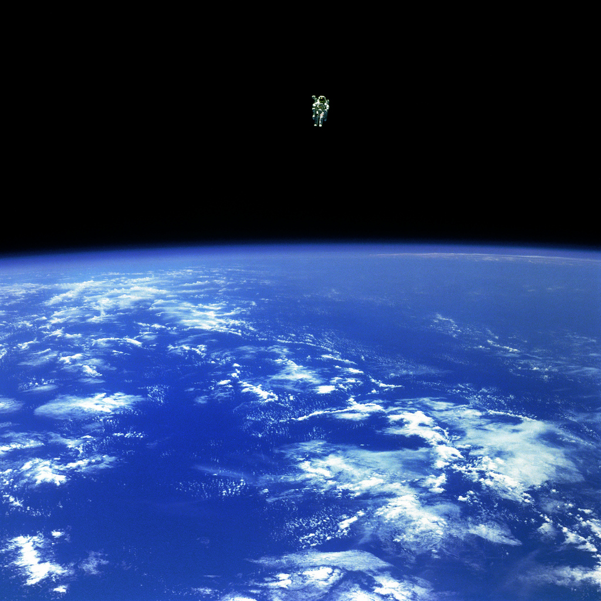

J'ai une passion qui est en moi depuis mon enfance. Mon père, dès mes 5 ans,
m'a fait lire des livres sur l'espace. Petit, je ne comprenais pas grand chose, mais une chose était
sûre : il fallait que je voie ces choses de mes propres yeux. La complexité du cosmos me fascine tous les jours.
Si cette chose est réellement le résultat d'un pur hasard, alors c'est la chose la plus belle que l'homme peut
contempler.

À des dizaines et des dizaines de kilomètres au-dessus de l'océan, Bruce McCandless II flotte en toute sécurité dans l'espace, à 100 mètres de son vaisseau, propulsé à l'aide d'un réacteur dorsal. Il est le premier, ce 12 février 1984, à s'éloigner autant de son orbiteur.